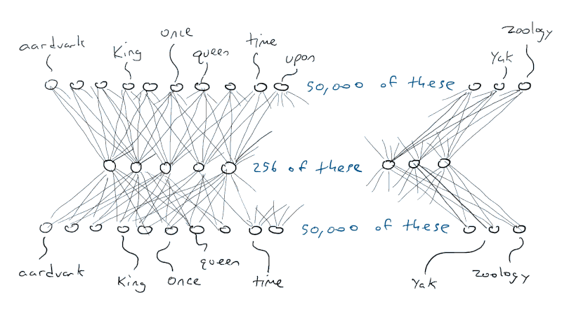
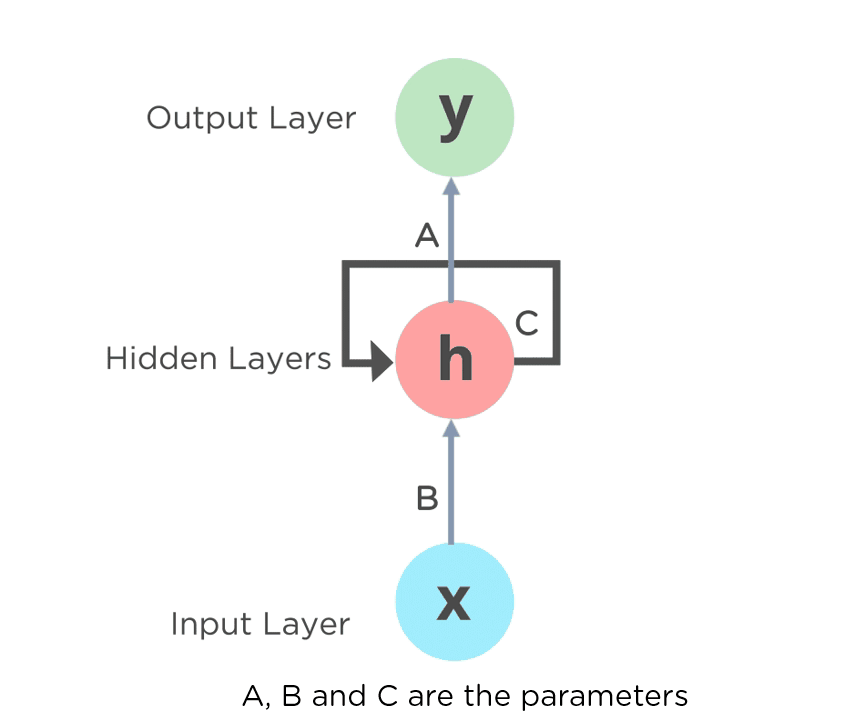
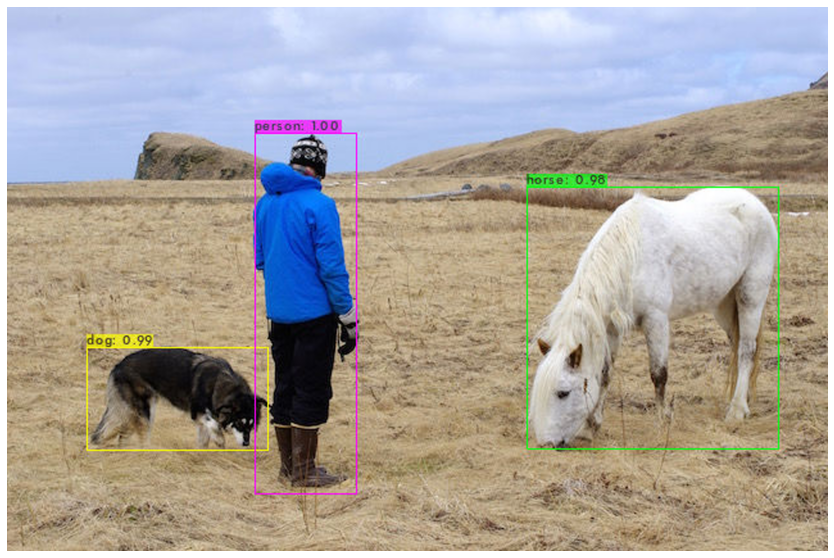
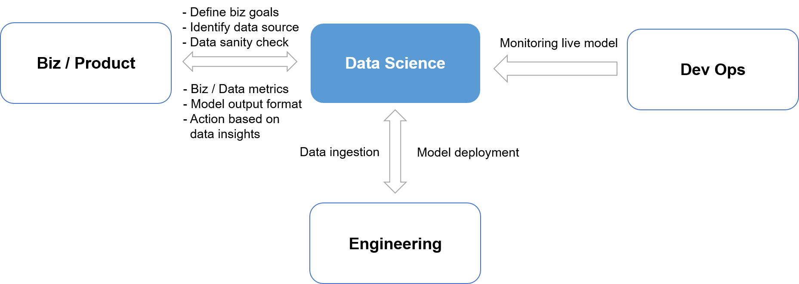

This initiative entails developing and refining Large Language Models (LLMs) such as GPT-3.5 Turbo
to enhance natural language processing applications. The focus is on understanding complex text
and crafting responses, utilizing tailored prompts to direct the model for accurate output.
The project investigates comprehensive fine-tuning and Parameter Efficient Fine Tuning (PEFT)
strategies, balancing performance with computational efficiency. It also integrates Retrieval
Augmented Generation (RAG) for dynamic data retrieval, providing robust, knowledge-based
interactions within chatbot systems, particularly for e-commerce platforms.


Dive into sentiment analysis and automatic text generation through advanced many-to-one LSTM neural
networks. This project showcases the power of deep learning in interpreting and predicting emotional
tones in large text corpora.
Focusing on logistical efficiency, this project develops an end-to-end machine learning pipeline
to classify and predict trucking delays. Utilizing AWS Redshift for data management and a
Hopsworks pipeline for processing, the solution aims to streamline delivery schedules and
improve customer satisfaction.

Transitioning from manual invoice reconciliation, this project introduces an OCR system
built from the ground up. By leveraging advancements like YOLO for object detection and
Tesseract for OCR, this solution promises a revolution in digital invoice processing,
emphasizing accuracy and efficiency.
The project develops a predictive model for health insurance payouts, which is
critical for insurers to set profitable premiums. By applying the XGBoost
Regressor algorithm, it evaluates key indicators to provide a reliable forecast model.

Addressing the critical issue of customer retention, this project implements
ensemble machine learning techniques to predict and analyze customer churn for
a banking institution, providing actionable insights to mitigate revenue impacts.

This project leverages AWS SageMaker and related services to develop a classification
model for predicting causes of death. The project leverages AWS's Sagemaker, DataWrangler, and Lambda services to deploy
Machine Learning models efficiently for predictive analysis.